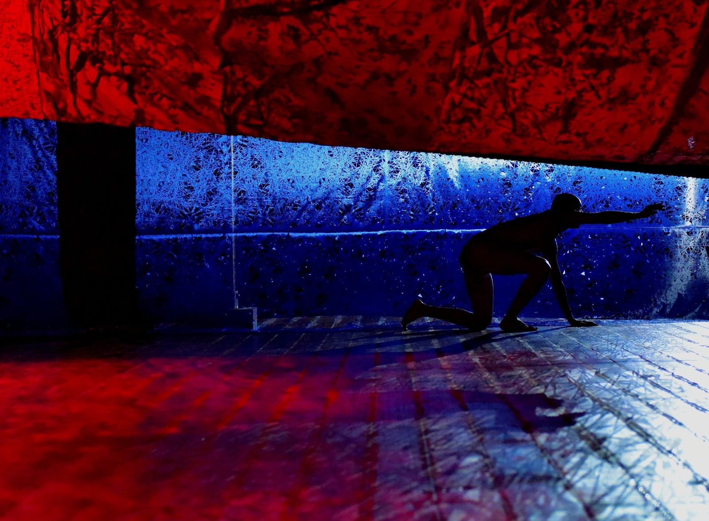
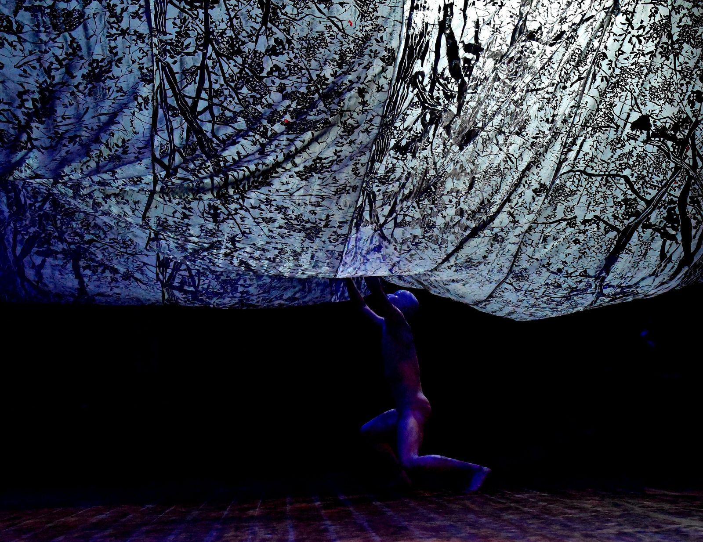
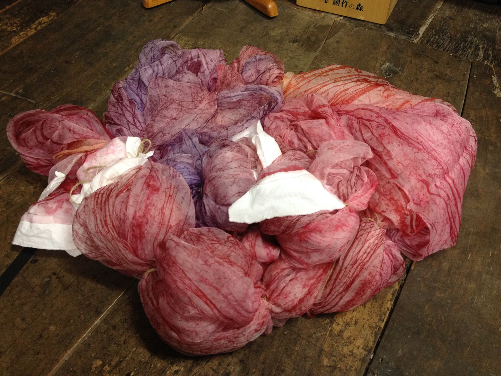
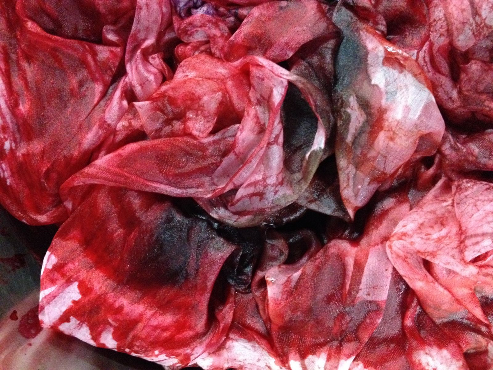
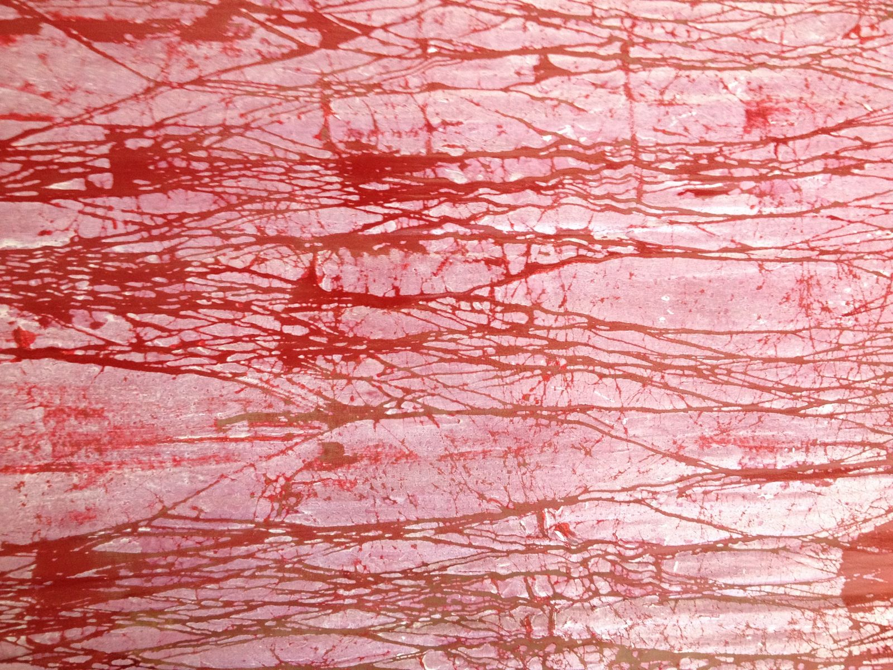
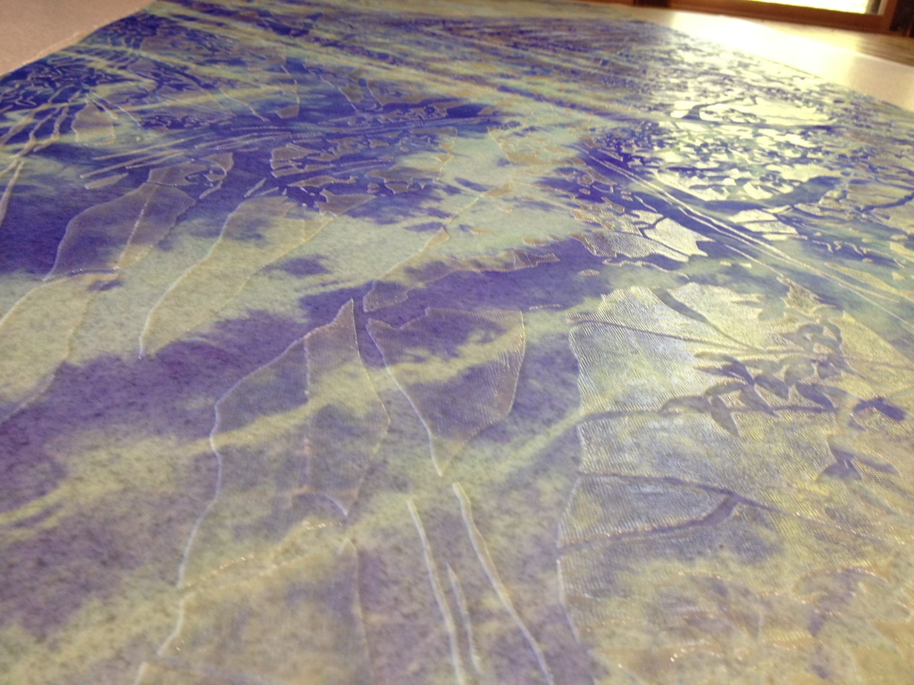
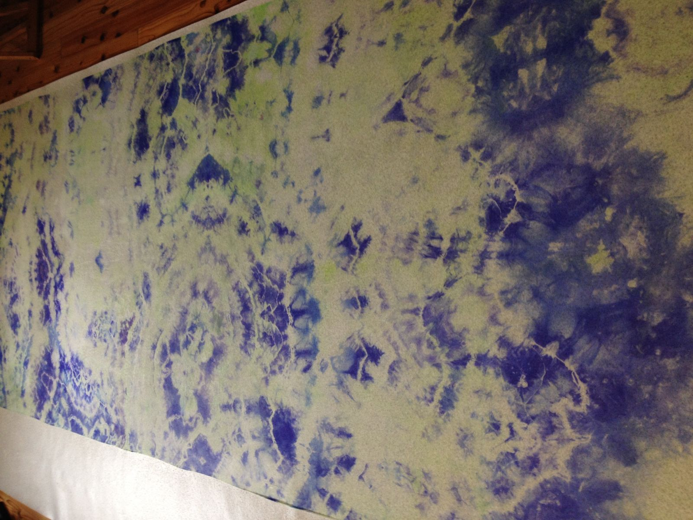
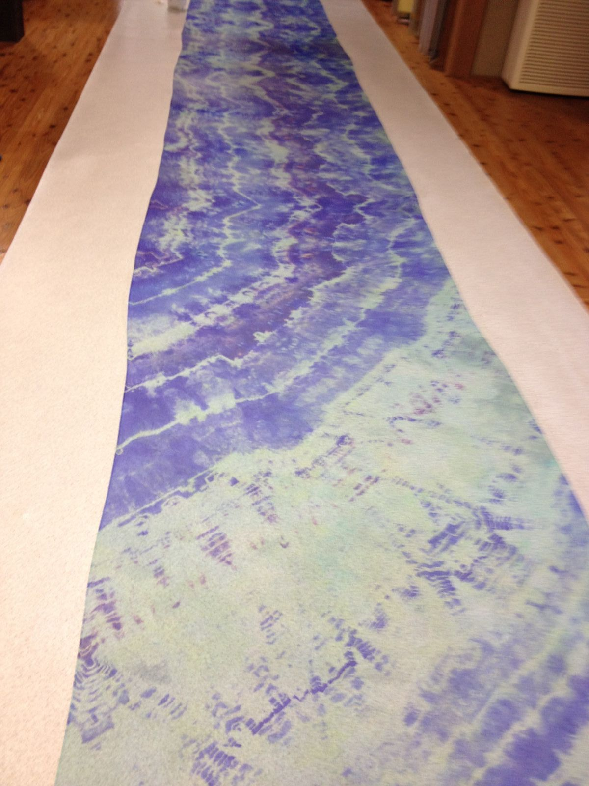
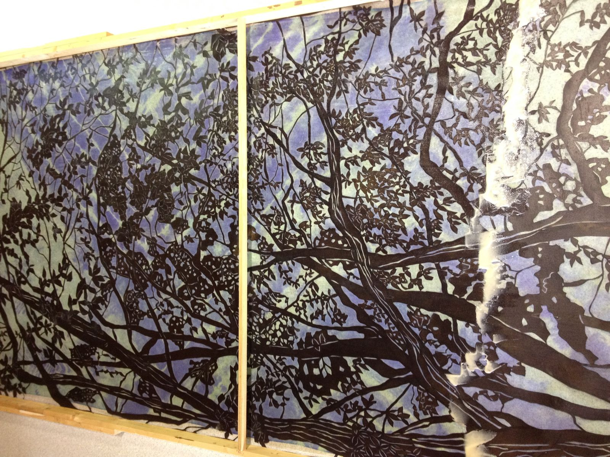
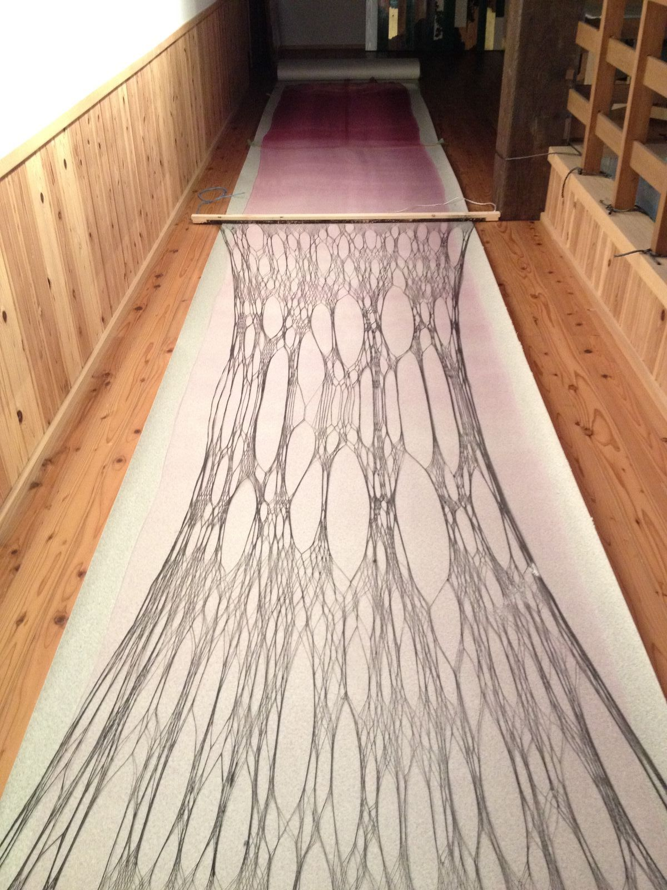

Toi × Bi


Shibori & Resist-Dye Installation




I dye. I remember.
Color seeping into cloth is like memory settling into the body —
slow, irreversible, quietly transformative.
The resist paste is left on the fabric. When light passes through, it creates translucent shadows. The dyeing process itself becomes the artwork.







